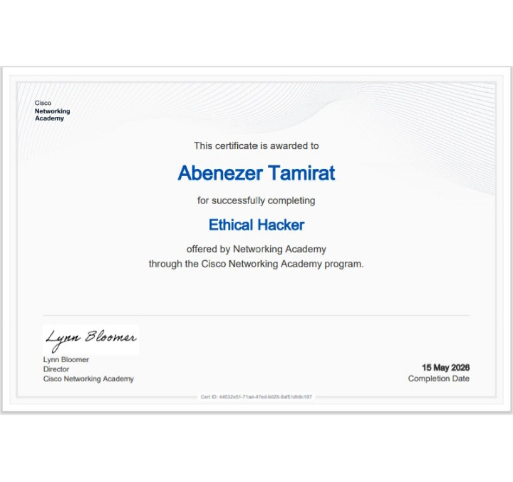
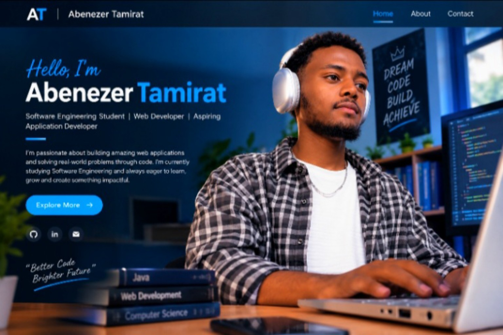
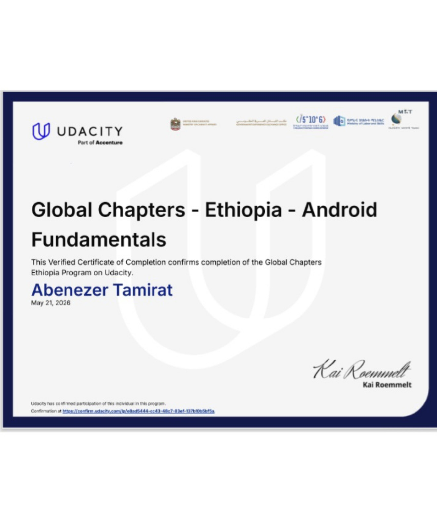
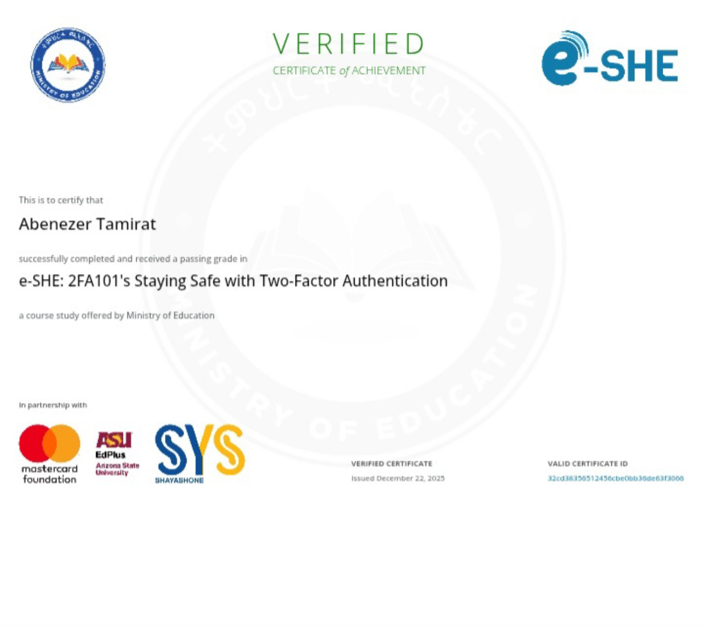
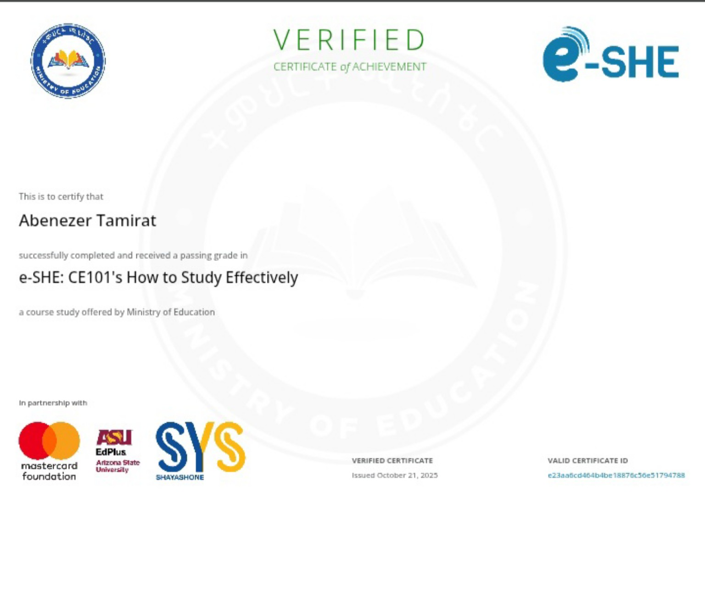

A LITTLE ABOUT ME
Curious mind. Growing developer.
Every project is a chance to learn something new and turn an idea into something real.

Abenezer Tamirat
Software Engineering Student
I'm a student who enjoys exploring technology, learning programming, and understanding how digital products work behind the scenes.
MY JOURNEY
Learning with a purpose
My goal is to grow into a software professional who can build helpful websites and applications. I'm strengthening my fundamentals through practice, coursework, and small projects.
I am also interested in cybersecurity: understanding common risks, how to detect them, and how to protect systems responsibly.
Skills I'm developing
HTML & CSSPage structure and styling
01JavaScriptInteractive web experiences
02Java & OOPProgramming and design principles
03Networking & CybersecurityNetworks, ethical hacking, and safe practices
04Video EditingLearning to create and edit engaging videos
05Graphic DesignExploring visual design and creative layouts
06LEARNING MILESTONES
My Certificates.
Certificates from courses and learning programs I've completed.


e-SHE · MINISTRY OF EDUCATION
Staying Safe with Two-Factor Authentication
Issued December 22, 2025
View certificate ↗
Select any certificate image or “View certificate” link to open it at full size.
Stay curious
Ask questions, explore ideas, and keep learning.
Build consistently
Turn lessons into projects and learn from mistakes.
Create responsibly
Use technology to solve real problems and help people.
LET'S TALK